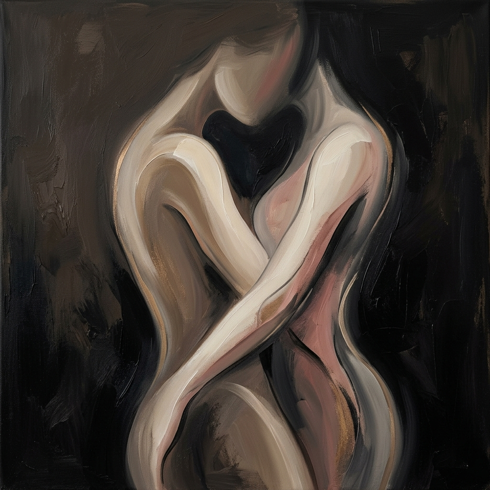
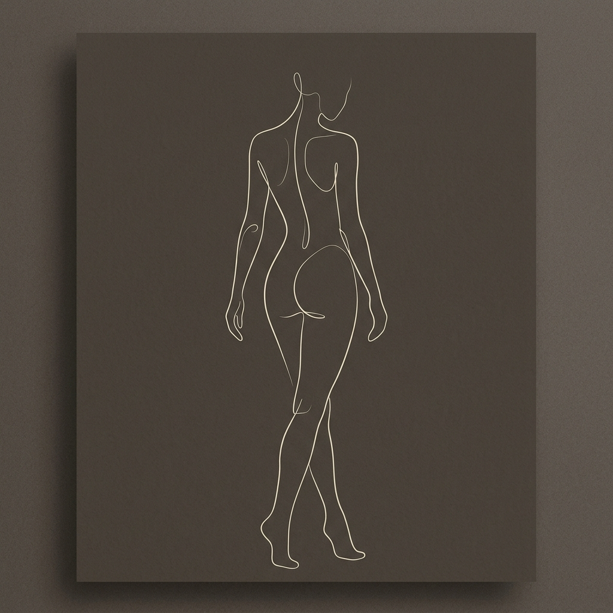
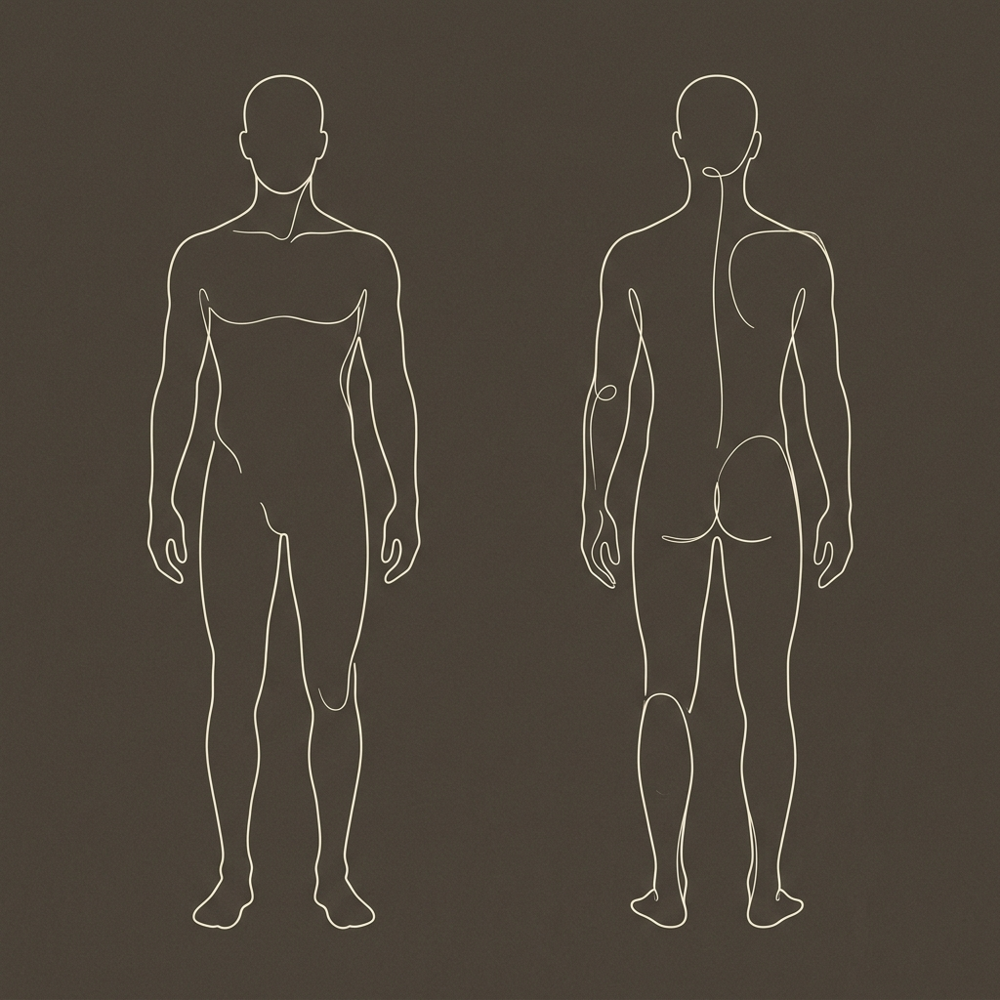

...es la principal amenaza de la pasión; una sombra que de a poco va opacando la conexión íntima. El reto, ante dicha circunstancia, es desafiar la rutina y explorar nuevos territorios.
Por esto, los masajes eróticos representan la oportunidad perfecta para reavivar la conexión y tu vida sexual, a través de un viaje lleno de sensaciones jamás vividas.
¡COMENCEMOS!
La piel es el órgano más extenso del cuerpo humano y esta actividad te permitirá medir cuáles áreas están pasando desapercibidas.
Utiliza la ilustración corporal adjunta para resaltar cuáles zonas de tu pareja sueles estimular con tus manos como parte del acto sexual.
Te recomiendo que cuando identifiques una zona utilices la siguiente convención:
+ Si sueles centrarte en ese lugar.
- Si pasas por ahí rápidamente.


¡Este ejercicio te ayudará a ser consciente de tus hábitos sexuales!
¿Qué cambios estás dispuesta a hacer para lograr una vida sexual más dinámica y diferente? Puede ser desde pequeñas modificaciones en la rutina hasta la disposición de aventurarte en nuevas experiencias.
Los masajes eróticos son una oportunidad única de abrir nuevas puertas de placer. Te aseguro que una vez los pongas en práctica, descubrirás nuevos niveles de satisfacción.
Para que la experiencia sea completa, incorpora aceites o cremas que si se saben usar de forma correcta y se combinan con técnicas especiales de masajes eróticos, puedes lograr que tu pareja llegue a la cima del placer.
Anímate a jugar con luces o velas para lograr un ambiente íntimo. Sé que la mayoría de las personas optan por un ambiente totalmente oscuro; sin embargo, las sombras y la luz tenue ayudan a no perder el contacto visual y a estimular mucho más la excitación.
Sin comunicación no hay fluidez ni entendimiento. Hablen abiertamente sobre sus gustos, lo que no les agrada, sus fantasías y preferencias.
¿Tus fantasías y las de tu pareja son posibles de cumplir? Entonces, ¿qué están esperando? Anímate y verás cómo al hacerlas realidad aportarás emoción y variedad a tu sexualidad.
Si quieres hacer algo diferente y no sabes por donde empezar, los juegos eróticos serán una gran guía. Estos juegos suelen dar las directrices del encuentro sexual y retarlos a hacer cosas diferentes. Desde masajes hasta posiciones que nunca habían probado. Una excelente opción para profundizar la conexión.
Espero que esta guía te haya servido como recurso para darle la importancia que amerita cuidar tu vida sexual.
Recuerda que mantener la química sexual no solo fortalece el vínculo emocional y mejora la calidad de la relación, sino que también actúa como un poderoso aliado contra el estrés y la rutina.
¡Gracias por haber sido parte de este camino hacia la plenitud sexual!